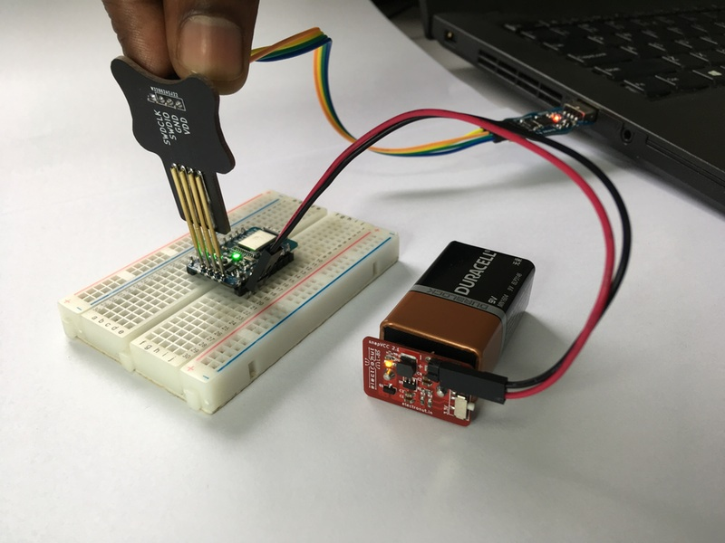

hackaBLE

hackaBLE is a tiny (~ 18 mm x 28 mm) Open Source Nordic nRF52832 based BLE development board you can embed in your BLE projects. It's designed such that you can use it three ways:
- On a breadboard
- On a custom PCB, hand-soldered easily using the castellated 2.54 mm pitch headers
- On a custom PCB, using a stencil and oven, making use of extra pads underneath the PCB
hackaBLE uses offers more value than just using the BLE module directly - since it incorporates the necessary passive components - including the ones for the buck converter for power saving - and adds an RGB LED and a button for convenience. It's also much easier to solder than the bare modules.
Pinout for hackaBLE

PCB Footprint for hackaBLE

(The kicad footprint for hackaBLE is readily available in this repository.)
Programming hackaBLE

hackaBLE uses the Nordic nRF52832 which in turn is based on an ARM Cortex-M4 core. So you can really program it with any ARM compatible programmer. We do have a convenient solution though, in the form of our Bumpy blackmagic probe compatible SWD debugger and our PogoProg.

As shown above, use the four SWD pins of PogoProg on hackaBLE to upload or debug hackaBLE.
Please read the bumpy documentation on using Bumpy to program hackaBLE.
For more details on nRF5 2programming, please read our guide on getting started with Nordic nRF5 SDK.
hackaBLE & Arduino
Hackable does not ship with a bootloader, but it is supported in arduino. Please see https://github.com/electronut/ElectronutLabs-bluey#Arduino for details (but select Hackable in the boards menu).
Buy a hackaBLE!
hackaBLE is available for purchase from our Tindie store. Please email us at info@electronut.in if you have any questions.